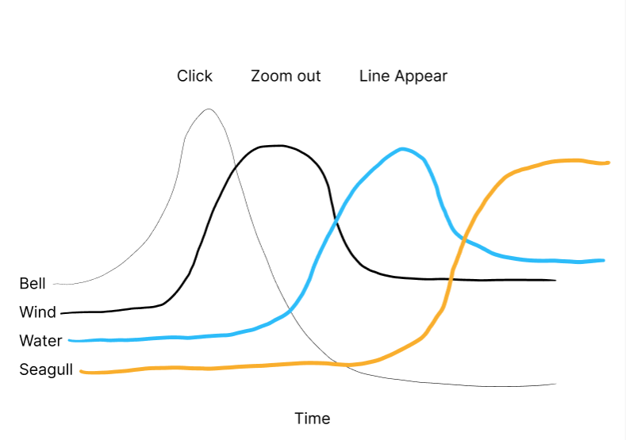
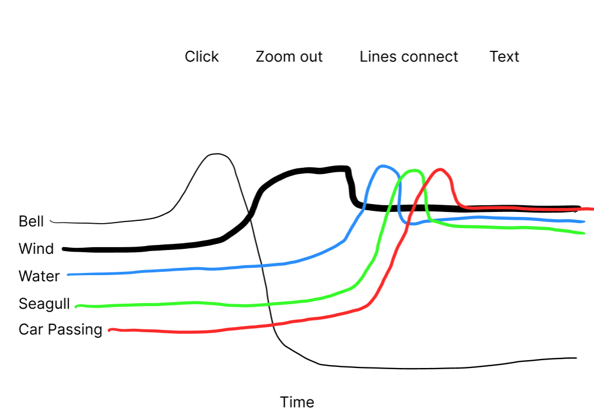

Design Journal
Week 7
Design Journal
Junming He
Hochelaga Archipelago
November 3, 2026
What I Worked On
This week, I mainly focused on developing the sound design for the opening sequence of our Hochelaga Archipelago interactive map. I also worked on integrating my existing HTML prototype into our group's React project. Previously, the opening relied entirely on visual elements, including the camera movement, island markers, connection animations, and introduction text. Although the visual sequence was already working, I wanted to explore how sound could make the experience more engaging and help guide visitors through the different stages of the animation.
Integrating the Opening into the Group Project
Before working on the sound design, I transferred my opening prototype into our group's React project. Since the original opening was developed using HTML, CSS, and JavaScript, I needed to adapt its structure to work with JSX and React. I created a separate Opening page and reorganized the existing files so that most of the map and animation logic could still be reused.
During this process, I encountered some issues with MapLibre and CSS styling, but I gradually resolved them through testing and adjustments. I also connected the Explore the Archipelago button to the group's main interactive map. My main goal was to preserve the original design and interactions while keeping the Opening relatively independent from the components developed by other group members.
Sound Design — Initial Ideas and Goals
After finishing the visual part of the opening, I started thinking about how sound could improve the experience. I had two main goals in mind. First, I wanted to make the opening feel more lively and immersive. Although the map animation already introduced the islands and their connections visually, I felt that sound could help create a stronger sense of place.
Second, I wanted the sound design to act as a preview of the main interactive map. My idea was that visitors would hear certain sounds during the opening without necessarily knowing exactly what they represent. Later, when they enter the interactive map and explore different islands and their connections, they might encounter those sounds again and begin to understand their meaning. In this way, the opening would not only introduce the geographical context but also establish an initial impression that visitors could connect to the information they discover later.
Planning the Sound with an Audio Map
Before adding the audio to the website, I created an audio map to roughly plan how different sounds might appear throughout the opening. I used it to think about the sequence of sounds, their relative volumes, and which ones should be more noticeable than others.
My first version included crowd ambience, seagulls, a ferry, a train, and insects. I wanted to represent different aspects of the archipelago, including nature, transportation, and human activity. However, when I started testing these sounds together, I realized that most of them had their own distinctive characteristics. Instead of blending into one environment, they competed for attention. The crowd noise, transportation sounds, and animal sounds all introduced different kinds of activity. When they appeared close together, the result felt quite chaotic, and it was difficult to establish a clear focus. This made me reconsider my approach. I realized that I did not necessarily need more sounds to create a richer atmosphere. I needed to think more carefully about how different sounds could support one another.


Second Iteration — Establishing an Atmosphere
For the second version, I simplified the sound selection to a bell, wind, flowing water, and seagulls. The bell was used at the beginning of the interaction. When visitors click Touch to Begin or the Montréal marker, the bell provides immediate feedback and marks the start of the experience.
The wind was introduced during the camera's zoom-out animation. During testing, I found that it worked particularly well as a background sound. It created a sense of movement and space without drawing too much attention away from the map. I also experimented with flowing water during the connection animation. This worked better than I initially expected. The continuous movement of the water sound, combined with the lines gradually extending between islands, made the animation feel more dynamic.
However, I was less satisfied with the seagull sound. Although the calls were recognizable, they felt relatively static. Rather than suggesting birds moving through the environment, the sound made me imagine seagulls staying in one place. I wanted the audio to support the movement already happening on screen, so I felt that this part needed further development. I also noticed that the connection animation had three main stages, while my sound design did not yet have a clear sound event for the final stage.
Third Iteration — Adding Movement and Human Activity
In the third version, I made two main changes. First, I combined the seagull calls with the sound of flapping wings. This was intended to give the birds a stronger sense of movement instead of making them sound as if they were simply resting somewhere. I also paid attention to the length of the combined audio. I did not want the wing-flapping to continue for too long, since it could become repetitive or distracting.
Second, I introduced the sound of a passing car. Unlike the flowing water, the car sound has a clear beginning, a moment when the vehicle passes, and an ending as it moves away. I felt that this made it suitable for the final stage of the connection animation. I did not want to repeat the sound continuously because that could create the impression of heavy traffic. Instead, I treated it as a short event within the larger environmental soundscape. After testing this version, I felt that the relationship between sound and animation had improved. The water provided a continuous background, while the seagull and car sounds introduced more noticeable moments of movement. The different sounds also gave the three connection stages a clearer progression.
Connecting the Sound Design to the Main Map
Another important consideration was that I did not want the sounds to be chosen only because they were recognizable or pleasant to listen to. I wanted them to relate to the connections that visitors would later explore in the main interactive map. For example, flowing water could introduce the idea that the waterways connect different islands, but can also carry pollution between places. The sound of a passing car could suggest human-made connections, such as bridges that allow people and vehicles to travel between islands. The seagull sound introduces another aspect of the archipelago by drawing attention to wildlife and the relationships between the islands and their natural environment. These ideas influenced my sound selection. Rather than trying to reproduce the exact sound of each connection shown on screen, I wanted to introduce broader themes that visitors could explore in more detail later.
The animated lines are still a conceptual representation of connections, so the sounds are not intended to identify specific routes or verified relationships between particular islands. Instead, I see them as an introduction to different ways of thinking about connection: environmental, ecological, and human-made. This also relates to my original goal of using the opening as a preview. I hope that when visitors hear similar sounds or encounter related stories in the main map, they will recognize something from the opening and begin to connect the two experiences.
Refining Timing and Sound Hierarchy
After deciding on the third version, I started refining how the sounds interacted with the animation and with one another. One issue was timing. Initially, some sounds appeared too close together, especially the seagull and passing car. Because both have noticeable movements and changes in volume, they competed for attention when played too closely. I adjusted the timing to create a short interval between them, allowing each sound to be heard more clearly.
I also reconsidered how long each sound should remain. The flowing water works as a continuous environmental sound, so I wanted it to remain present throughout the connection animation. In contrast, the seagull and car sounds work better as shorter events that appear at particular moments.
Another challenge was balancing their volumes. During testing, I found that the water sound could become too dominant when the other sounds appeared. Rather than stopping the water completely, I adjusted it so that its volume gradually decreases when the seagull sound begins and remains quieter afterward. This allows the water to continue supporting the atmosphere without competing as strongly with the other sounds.
I also made adjustments to the connection animation itself, extending the duration of the three stages to give the sounds more space. Instead of treating sound and animation as separate elements, I gradually started adjusting them together. Sometimes I changed the timing of the audio to better match the animation, while at other times the characteristics of the sound influenced how long I wanted a visual stage to last. I also experimented with assigning a consistent colour to the connection lines within each stage. This made the three stages easier to distinguish visually and helped create a clearer sense of progression.